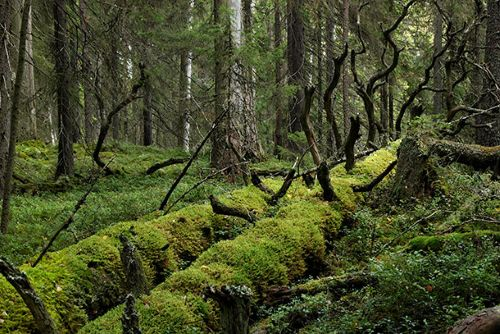

Tietoa meistä
Keitä olemme?
ARTEMIS on villin luonnon ja luonnon monimuotoisuuden suojelemiseen keskittyvä organisaatio. Toimintamme perustuu ajatukseen, että tehokas luonnonsuojelu tarvitsee kolmea asiaa: tutkittua tietoa, konkreettisia tekoja ja ihmisiä, jotka ovat valmiita toimimaan. Rahoitamme luonnonsuojeluhankkeita ja tutkimusta, välitämme tutkimukseen perustuvaa tietoa sekä järjestämme toimintaa, jonka kautta jokainen voi osallistua luonnon suojelemiseen.
Missiomme on suojelemme villiä luontoa yhdistämällä tutkimuksen, rahoituksen ja ihmisten toiminnan. Haluamme maailman, jossa luonnolla on tilaa säilyä villinä ja jossa ihmisen toiminta mahdollistaa muiden lajien ja elinympäristöjen säilymisen myös tuleville sukupolville.
Mitä teemme?
Rahoitamme suojelua tukemalla hankkeita, joilla suojellaan villieläimiä, luonnon monimuotoisuutta ja niiden tarvitsemia elinympäristöjä. Haluamme suunnata resursseja sinne, missä niillä voidaan saada aikaan mahdollisimman merkittäviä ja pitkäkestoisia vaikutuksia.
Hyvät aikomukset eivät yksin riitä luonnonsuojelun perustaksi. Siksi ARTEMIS tukee tutkimusta, jonka avulla luonnon tilaa, siihen kohdistuvia uhkia ja erilaisten suojelutoimien vaikutuksia voidaan ymmärtää paremmin.
Tutkimustiedolla on arvoa vasta, kun sitä voidaan käyttää ja siksi teemme tiedosta ymmärrettävää. Tuomme luonnonsuojelua koskevaa tietoa tutkijoilta ihmisten arkeen ymmärrettävässä muodossa ja autamme erottamaan tutkimukseen perustuvat väitteet oletuksista ja mielikuvista.
Tuomme ihmiset yhteen, sillä luonnonsuojelu ei ole vain instituutioiden tehtävä. Järjestämme tapahtumia, koulutuksia ja vapaaehtoistoimintaa, joissa ihmiset voivat oppia luonnosta, tavata muita luonnonsuojelusta kiinnostuneita ja tehdä yhdessä konkreettista työtä ympäristön hyväksi.
Miksi ARTEMIS?
Nimemme juontaa juurensa antiikin Kreikan Artemikseen; erämaiden, villieläinten ja metsästyksen jumalattareen, joka myöhemmässä perinteessä yhdistettiin myös kuuhun. Meille Artemis merkitsee ennen kaikkea villin luonnon itsenäisyyttä ja sen suojelemista. Luonto ei tarvitse ihmiseltä oikeutusta olemassaololleen. Se tarvitsee tilaa. Sitä tilaa ARTEMIS puolustaa.

Usein kysyttyä
- Mikä ARTEMIS on?
- ARTEMIS on luonnonsuojeluorganisaatio, joka tukee luonnonsuojelua ja tutkimusta, jakaa tutkittua tietoa sekä tarjoaa ihmisille mahdollisuuksia osallistua käytännön suojelutyöhön.
- Mitä ARTEMIS suojelee?
- ARTEMIS tukee villieläinten, luonnon monimuotoisuuden ja arvokkaiden elinympäristöjen suojelua. Tavoitteena on antaa luonnolle tilaa säilyä mahdollisimman monimuotoisena.
- Mihin ARTEMIS käyttää lahjoituksia?
- Lahjoituksia käytetään luonnonsuojeluhankkeiden ja tutkimuksen tukemiseen sekä luonnonsuojelua koskevan tiedon, koulutuksen ja toiminnan järjestämiseen.
- Miten voin osallistua ARTEMIKSEN toimintaan?
- Toimintaan voi osallistua esimerkiksi tapahtumissa, koulutuksissa ja vapaaehtoistyössä. Luonnonsuojelua voi tukea myös lahjoittamalla sekä tekemällä luonnon kannalta kestävämpiä valintoja omassa arjessa.
- Pitääkö luonnonsuojeluun osallistuvan elää täysin ekologisesti?
- Ei. ARTEMIS ei edellytä täydellisyyttä. Tavoitteena on lisätä ymmärrystä luonnosta ja auttaa ihmisiä tekemään mahdollisuuksiensa mukaan parempia ja tietoisempia valintoja.